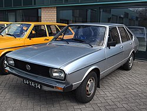
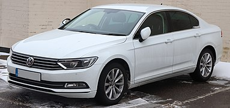
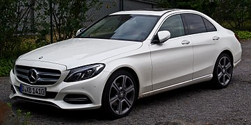
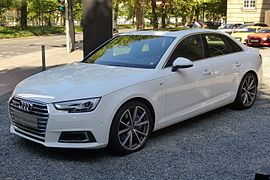
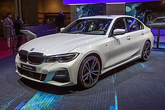
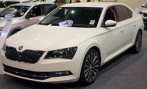

headder
D-клас
D-клас є третім найбільшим в європейській класифікації легкових автомобілів, який описується як "великі автомобілі". Це еквівалентно категорії «великий сімейний автомобіль» (large family car) у Euro NCAP, і сучасним визначенням категорії "середньорозмірний автомобіль" (mid-size car), які використовуються в Північній Америці. "Компактний представницький автомобіль" (Compact executive car) є частиною категорії D-класу. Продажі автомобілів D-класу становлять 8% ринку.
Визначення
Європейські класи не ґрунтуються на критеріях розміру або ваги. Автомобілі D-класу мають довжину приблизно 4,6 метри. Більшість автомобілів D-класу є седанами та універсалами. Ціноутворення та специфікація автомобілів D-класу можуть сильно змінюватися, від базового недорогого транспорту до більш розкішних і дорогих моделей.
Поточні моделі
У п'ятірку найбільш продаваних автомобілів D-класу в Європі входять Volkswagen Passat, Mercedes-Benz C-Class, Audi A4/S4/RS4, BMW 3 Series та Škoda Superb.
    

© Powered by Igor Khodachok 2020